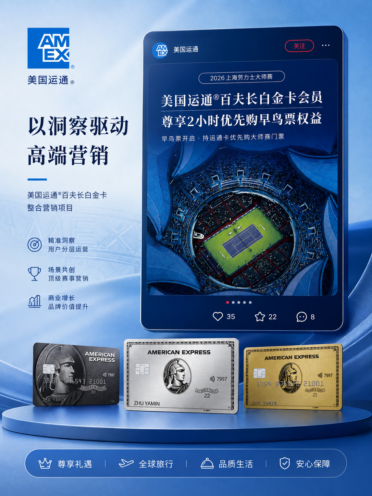
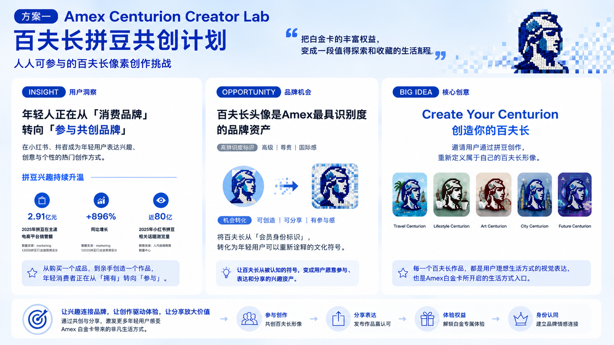
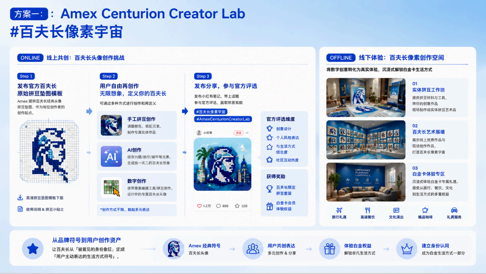
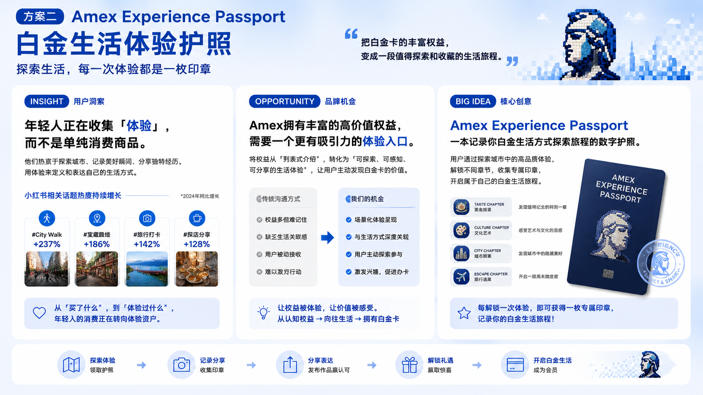
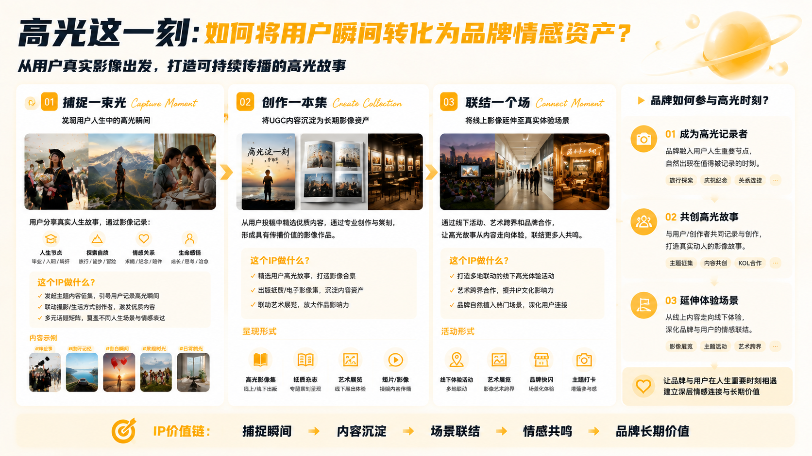
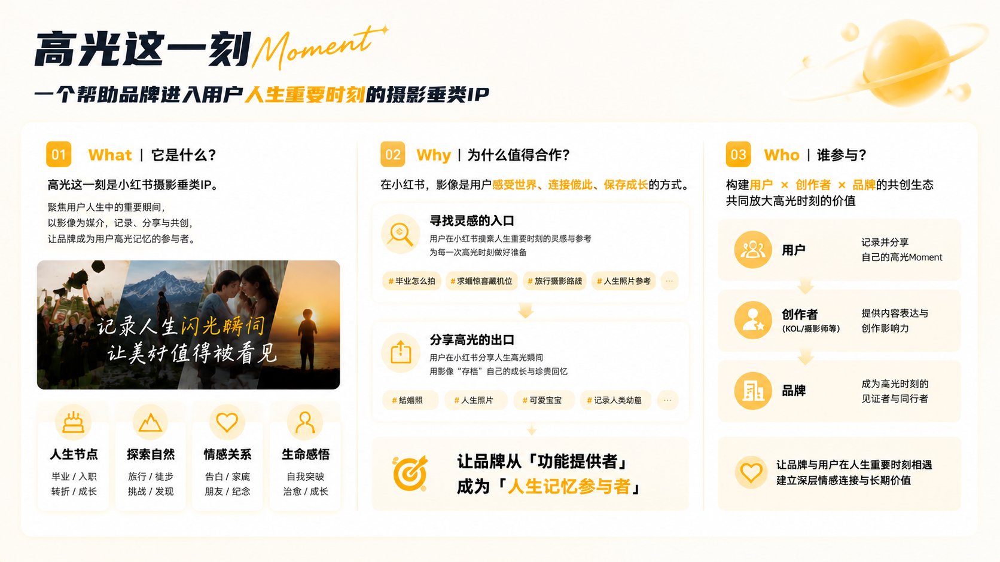
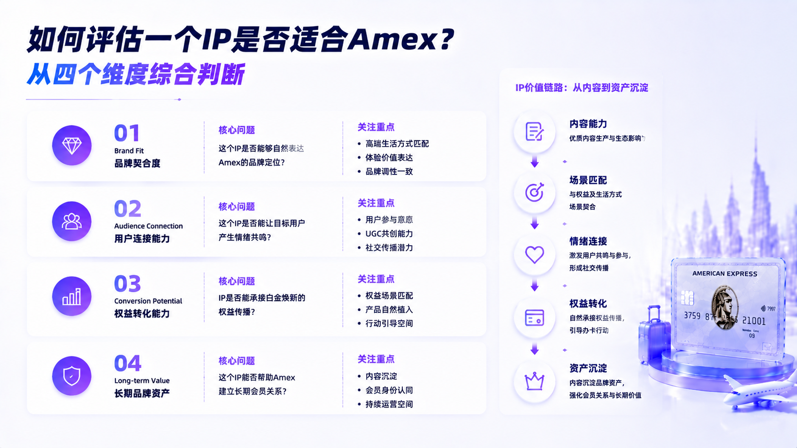
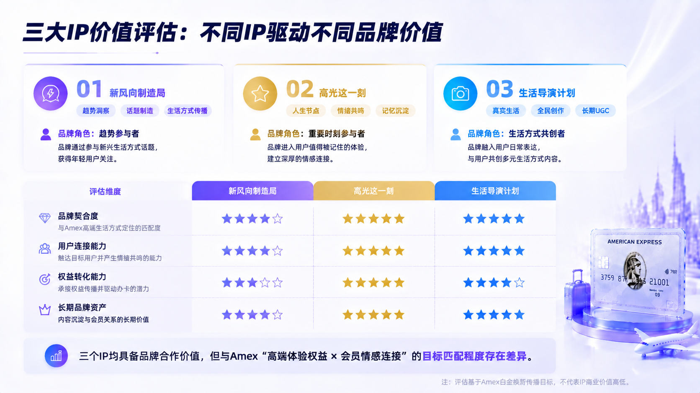
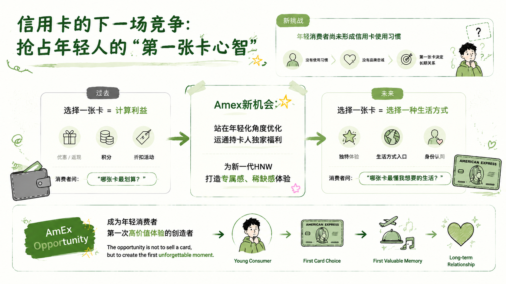

American Express
Premium Marketing Experience
Brand Marketing Intern
Supported premium card marketing initiatives through Xiaohongshu content strategy, consumer insight analysis, and experiential campaign planning.

Project Overview
Role
Brand Marketing Intern
Focus
Xiaohongshu Content Strategy
Consumer Insights
Experiential Marketing
Brand Activation
Deliverables
Campaign Concepts
IP Evaluation
Content Strategy Recommendations
01.1 Xiaohongshu Experiential Campaign Development
Turning premium card benefits into shareable lifestyle experiences.
Consumer Insight
Young consumers increasingly seek experiences they can participate in, create, and share, rather than simply consume.
Brand Opportunity
Transform American Express premium benefits into memorable lifestyle moments through Xiaohongshu.
Strategic Direction
Build engagement through experience, participation, and social sharing.



01.2 Xiaohongshu IP Evaluation
Evaluating Xiaohongshu IP opportunities through brand fit, audience engagement, and long-term value creation.
IP Landscape Analysis
Compared three Xiaohongshu IP models — Xin Feng Xiang Zhi Zao Ju, Moment, and Lifestyle Director Plan — to identify different opportunities for brand engagement.
IP Evaluation & Recommendation
Assessed potential IP partnerships across four dimensions: brand fit, audience connection, conversion potential, and long-term brand value.




01.3 Additional Contributions
Supporting brand marketing execution through content optimization, visual review, and campaign coordination.
Content & Visual Review
Reviewed Xiaohongshu content copy and key visuals to ensure alignment with Amex brand tone, premium positioning, and communication objectives.
KOL Collaboration Support
Supported KOL partnership workflows by reviewing content direction, providing optimization suggestions, and aligning creator outputs with campaign goals.
Campaign Coordination
Assisted campaign planning and execution processes through feedback consolidation, internal communication, and content improvement recommendations.
